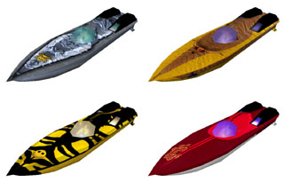

WaterRace Ships
The racing ships of WaterRace are completely different from what you expect from a classic racing game (with water or without).
In most racing games, selecting another racing vehicle will change its look and top speed and that's it: you’re still driving the same way you used to with the previous vehicle.
It’s not the case at all in WaterRace: the ships are totally different! Really. Each of them has, of course, a unique design and story, but most important has a truly unique behavior. You won't find two ships in WaterRace that give the same feelings or need to be driven identically.
The ships pros and cons are carefully balanced so that no ship is able to win all the races (unless the player is very, very good), and no ship either will loose all races. Faster ships are usually more difficult to drive or bigger (i.e.not well fitted for inshore levels like Venice), and slower ships might be easier to drive or smaller (you will be able to overtake other ships more easily for example), but are...er... slower.
There is a real strategic aspect in the game: even if you're a very good pilot, if you choose to race a given level using a ship that does not fit well the aspect of the track or that you don’t really control, you might loose!
Most WaterRace ships are based on real offshore racing ships. This means that some of their caracteristics (e.g. engine power, size, weight...) are in the range of the ones of real offshore racing boats, while the other ones were exagerated: some ships weight up to 2T, other have a 1900HP engine, other can fly, etc...
We also added to each ship a turbo engine, which you can turn on for a limited time only. While the turbo is on, the ship benefits of an immediate extra engine power up to 1000HP, which creates an instantaneous strong acceleration - quite useful to overtake another ship!
Each ship is also provided with a set of eight totally different textures, each of them related to a WaterRace pilot. This is also great feature for network play!
|